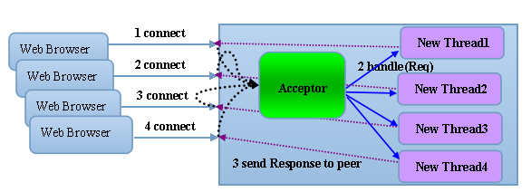

Netty是一个高性能、异步事件驱动的NIO框架。作为当前最流行的NIO框架，Netty在大数据分布式计算、游戏行业、通信行业等都获得了广泛应用，一些著名开源组件也是基于Netty的NIO框架构建。本文对Netty的NIO封装源码略作分析，知其然知其所以然。
背景知识
在JDK1.4之前，java的所有socket通信都只能采用同步阻塞模式，也就是BIO。这种一个请求一个应答的通信模型简化了上层应用的开发，但却有严重的性能问题。首先我们来看一下BIO的服务端通信模型：

通常由一个独立的Acceptor线程负责监听客户端连接，当收到客户端连接后，产生一个新的线程来处理该客户端的请求，处理完成后返回应答，最后销毁线程。这就是典型的一个请求一个应答模型。这里缺点很明显，频繁的线程创建销毁会销耗大量系统资源，同时当并发请求量很大的时候，线程数量急剧上升，性能急剧下降，最后可能发生宕机。
为了解决这些问题，后来对一连接一线程的模型进行了优化，改为线程池加任务队列模型。收到一个客户端请求时，先将请求放入任务队列，由线程池中的空闲线程从队列中取出任务并处理。这又被称为伪异步通信模型。它能解决BIO的问题，但还是无法从根本上解决问题，由于IO的读写操作会被阻塞，当并发量增加时，会导致任务队列中的任务不断堆积，客户端请求的响应时间变长，最终导致内存溢出或者拒绝新任务。
IO模型
Unix网络编程中把IO模型分为五类：
- 1、阻塞IO：最常用得IO模型，默认情况下所有文件操作都是阻塞的。以socket为例，当我们调用recvfrom接收来自socket的数据时，该方法会一直阻塞，直到数据报达到且被拷贝到应用进程的缓冲区或者发生错误。
- 2、非阻塞IO：调用recvfrom时，如果该缓冲区没有数据的话，就会直接返回EWOULDBLOCK错误，而不会阻塞等待。一般会对非阻塞IO进行轮询检查状态，看内核是不是有数据进来。
- 3、IO复用：Linux提供了select/poll，进程通过提交多个文件描述符（fd）给select或pull系统调用，阻塞在select，由select帮我们侦听提交的fd是否就绪。但是select/poll是顺序扫描fd的，支持的fd数量有限。因此linux还提供了epoll系统调用，epoll是基于事件驱动方式，而不是顺序扫描。当有fd准备就绪时，会立即回调函数callback。
- 4、信号驱动IO：开启socket信号驱动IO功能，并通过系统调用signaction执行一个信号处理函数。
- 5、异步IO：告知内核启动某个操作，并让内核在整个操作完成后通知我们。
关于linux上IO网了编程的只是，推荐一本书Unix网络编程，其中有详细的介绍。
从JDK1.4开始，Java提供了一套专门的类库来支持非阻塞的IO操作，java.nio包中这套接口是新提供的IO接口，因此叫New IO，这就是它被称为Java NIO的原因。
NIO是基于事件驱动思想来实现的，采用Reactor模式，主要解决BIO模型中一个服务端无法同时并发处理大量客户端连接的问题。NIO基于Selector轮询，当socket有数据可读、可写、连接、请求接入等事件时，操作系统会触发Selector返回准备就绪的SelectorKey集合。通过SelectableChannel进行读写操作。由于JDK的Selector底层是基于epoll实现的，所以不受2048连接数限制，理论上可以同时处理操作系统最大文件句柄个数的连接。
目前业界主流的NIO框架有两个：Netty和Mina。两个框架出自同一人之手，其中渊源大家有兴趣可以再网上看看。
Netty服务端
相比于BIO，NIO的开发要复杂的多，因此开发出稳定高性能的异步通信框架一直是个难题。Netty为了对开发者屏蔽NIO通信的底层细节，对底层NIO网络通信做了封装，使开发者只需关注自己的业务实现，降低开发工作量和开发难度。
获取源码
从GitHub上获取源码：git clone https://github.com/netty/netty.git。netty是用maven构建的，所以直接通过maven导入IDE即可。
EchoServer例子
首先我们来看example模块中的EchoServer，这是一个典型的Netty服务端应用。我们来分析服务启动的过程。
|
|
NioEventLoopGroup
首先创建两个NioEventLoopGroup，当调用NioEventLoopGroup构造方法时，首先调用其父类MultithreadEventLoopGroup构造方法，父类获得默认的线程总数，其默认值是Runtime.getRuntime().availableProcessors()*2。
|
|
接着调用自身构造器：
|
|
继续调用父类构造器
|
|
改构造器继续调用父类构造器
|
|
初始化
上面的构造过程主要完成：1、设置默认DefaultThreadFactory线程工厂，设置线程池名称和线程名称。2、初始化children数组，然后通过NioEventLoopGroup.newChild()完成child属性设置。
|
|
在newChild方法中，主要完成NioEventLoop实例构建。然后调用openSelector方法创建selector对象。其中进行了一个优化，设置了sun.nio.ch.SelectorImpl的selectedKeys和publicSelectedKeys属性。根据NioEventLoop.run()方法内部直接调用 processSelectedKeysOptimized(selectedKeys.flip())，并且没有直接使用selector.selectedKeys()。最后循环完成children数组的初始化children[i] = newChild(executor, args);，进而完成NioEventLoopGroup对象初始化。
|
|
ServerBootstrap
ServerBootstrap是服务端socket的启动辅助类，构造函数：
|
|
设置EventLoopGroup
只有一个无参构造函数，和一个拷贝构造函数。由于它需要的构造参数太多，因此选择用builder模式构造（《EffectiveJava》中有说：遇到多个构造器参数时应考虑使用构建器）。通过group方法设置两个NioEventLoopGroup，group属性是bossGroup，childGroup属性是workerGroup。
|
|
设置Channel
设置完EventLoopGroup，接着设置Channel：
|
|
ReflectiveChannelFactory是根据channelClass反射来创建Channel实例的工厂类，它只有一个方法：
|
|
服务端需要的channelClass是NioServerSocketChannel.class。设置完ChannelFactory，我们需要设置Channel的一些属性：
|
|
设置ChannelOption
ChannelOption中包括了TCP_NODELAY、SO_KEEPALIVE、SO_BACKLOG等重要的TCP参数，参数具体作用这里就不讲了。设置完Channel之后，我们接着为ServerBootstrap和其父类AbstractServerBootstrap指定Handler，其中ServerBootstrap的handler是NioServerSocketChannel对应的ChannelPipeline的Handler，所有连接该接听端口的客户端请求都会执行它；AbstractServerBootstrap的handler是客户端新接入的SocketChannel对应的ChannelPipeline对应的Handler，它是一个工厂类，为每个新接入的客户端都创建一个新的Handler。
|
|
启动服务
最后一步绑定端口，启动服务。b.bind(PORT)方法调用的是下面的doBind方法，完成Channel的初始化和端口绑定，其中有两个重要方法：initAndRegister()和doBind0()。
|
|
首先我们来看initAndRegister方法，它完成了Channel实例创建，实例化和注册channel到selector上。
|
|
newChannel方法通过反射调用NioServerSocketChannel构造方法，里面首先会调用newSocket方法来创建java的ServerSocketChannel
|
|
接着继续调用父类AbstractNioChannel的构造方法：
|
|
通过ch.configureBlocking(false)将channel设置为非阻塞。并在其父类AbstractChannel构造方法中初始化了unsafe和pipeline属性：
|
|
其中DefaultChannelPipeline构造方法中设置了HeadHandler和TailHandler，相当于初始化了Handler的处理链。这也是两个比较重要的类。
|
|
至此，终于完成了tag1.1的channelFactory().newChannel()方法，完成channel实例的构建。接下来看tag1.2的ServerBootstrap.init()方法：
|
|
里面主要设置了parentChannel和childChannel的options和attrs。并将客户端设置的参数覆盖到默认设置中。最后把通过childHandler(new ChannelInitializer<SocketChannel>())方法设置的handler加入到pipeline中。注：其实addLast方法并不是把handler正的放到pipeline的最后，而是放到tail的前一个节点上。
至此tag1.2完成。开始执行tag1.3，group().register(channel)。跟踪方法进去可以看到最终执行的是AbstractChannel.register()方法，其中重点是register0(ChannelPromise promise)方法：
|
|
AbstractNioChannel中的doRegister方法核心功能就是把javaChannel注册到selector上。pipeline.fireChannelRegistered()方法负责触发注册事件通知，下文会详细再介绍该方法。
|
|
至此tag1的initAndRegister完成。